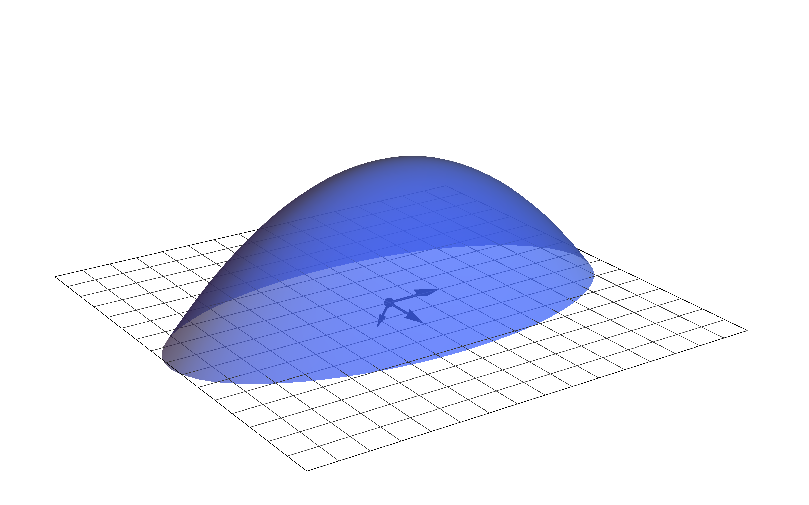

11. Optimization#
Lest the reader wonder why an entire chapter on optimization is included in a textbook on probability and statistics, we suggest that they recall the discussion in the expository chapter Chapter 9. There, we described the rationale: Our overarching goal over the current sequence of chapters is to train probabilistic models on data. To do this, we minimize the KL divergence between the proposed model distribution \(p(x,y;\theta)\) and the empirical distribution \(\hat{p}(x,y)\) of the dataset, and thereby turn “learning” into an optimization problem:

Many of the optimization problems we will encounter do not have closed-form solutions, and so we will need to study methods for approximation. All those studied in this chapter are versions of an iterative method called gradient descent. For a warm-up, we will study a simple single-variable version of this method in Section 11.1 before proceeding to the full multi-variable version in Section 11.3. Sandwiched between these two sections is Section 11.2, where we review the tools from elementary differential geometry that allow the generalization from one variable to many. Then, we finish with Section 11.4, where we study a particular form of gradient descent, called stochastic gradient descent, that is specifically tailored for the objective functions encountered in training probabilistic models. An appendix is incuded at the end of the chapter, containing some basic theorems on convex functions and their (rather fussy) proofs.
As hinted in the first paragraph, the inclusion of gradient-based optimization algorithms and their applications to parameter estimation is what distinguishes this book from a traditional book on mathematical statistics. This material is often included in texts on machine learning, but it is not in any text on statistics (that I know of). However, we are just barely scratching the surface of optimization and machine learning. If you are new to these fields and want to learn more, I suggest beginning with the fifth chapter of [GBC16] for a quick overview. After this, you can move on to [HR22], before tackling the massive, encyclopedic texts [Mur22] and [Mur23].
11.1. Gradient descent in one variable#
In this section, we describe the single-variable version of the gradient descent algorithm to help motivate the general algorithm in arbitrary dimensions. To begin, consider the optimization problem of locating the minimum values of the polynomial function
This function is called the objective function of the optimization problem. Its graph is displayed in:
Show code cell source
import torch
from torch.distributions.multivariate_normal import MultivariateNormal
import seaborn as sns
import matplotlib.pyplot as plt
import numpy as np
import matplotlib_inline.backend_inline
from math_stats_ml.gd import GD, SGD, plot_gd
plt.style.use('../aux-files/custom_style_light.mplstyle')
matplotlib_inline.backend_inline.set_matplotlib_formats('svg')
blue = '#486AFB'
magenta = '#FD46FC'
def J(theta):
return (theta ** 4) - 6 * (theta ** 3) + 11 * (theta ** 2) - 7 * theta + 4
grid = torch.linspace(start=-0.5, end=3.5, steps=300)
plt.plot(grid, J(grid))
plt.xlabel('$\\theta$')
plt.ylabel('$J(\\theta)$')
plt.gcf().set_size_inches(w=5, h=3)
plt.tight_layout()

From the graph, we see that the objective function has minimums of approximately \(J(0.5)\) and \(J(2.7)\).
It will be convenient to introduce the following terminology for our optimization problems:
Definition 11.1
Let \(J: \bbr^n \to \bbr\) be a function. A vector \(\btheta^\star\) is a local minimizer of \(J(\btheta)\) provided that
for all \(\btheta\) in a neighborhood of \(\btheta^\star\); if this inequality holds for all \(\btheta\), then \(\btheta^\star\) is called a global minimizer of \(J(\btheta)\). If we flip the inequality the other direction, then we obtain the definitions of local and global maximizers. Collectively, local and global minimizers and maximizers of \(J(\btheta)\) are called extremizers, and the values \(J(\btheta^\star)\) of the function where \(\btheta^\star\) is an extremizer are called extrema or extreme values.
Using this terminology, we would say that \(0.5\) is (approximately) a local minimizer of our polynomial objective function \(J(\theta)\), while \(2.7\) is (approximately) a global minimizer.
Let’s see how the single-variable version of the gradient descent algorithm would solve our optimization problem. This algorithm depends on an initial guess for a minimizer, as well as two parameters called the learning rate and the number of gradient steps. We will state the algorithm first, and then walk through some intuition for why it works:
Algorithm 11.1 (Single-variable gradient descent)
Input: A differentiable objective function \(J:\mathbb{R}\to \mathbb{R}\), an initial guess \(\theta_0\in \mathbb{R}\) for a local minimizer \(\theta^\star\), a learning rate \(\alpha>0\), and the number \(N\) of gradient steps.
Output: An approximation to a local minimizer \(\theta^\star\).
\(\theta := \theta_0\)
For \(t\) from \(0\) to \(N-1\), do:
\(\theta := \theta - \alpha J'(\theta)\)
Return \(\theta\)
Though this simple description of the algorithm outputs just a single approximation to a local minimizer, in practice it is often convenient to output the entire sequence of \(\theta\)’s produced as the algorithm iterates through the for loop:
Then, as we will see below, by tracking the associated objective values
one may monitor convergence of the algorithm.
The assignment
in the for loop is called the update rule. This form is convenient for implementation in code, but for theoretical analysis, it is often convenient to rewrite the rule as a recurrence relation in the form
for all \(t\geq 0\). We say that the new parameter \(\theta_{t+1}\) is obtained by taking a gradient step from \(\theta_{t}\). The first update occurs when \(t=0\), yielding
To understand the intuition behind the algorithm, consider the two cases that the derivative \(J'(\theta_0)\) is positive or negative:
Show code cell source
def J_prime(theta):
return 4 * (theta ** 3) - 18 * (theta ** 2) + 22 * theta - 7
plt.plot(grid, J(grid), color=blue)
plt.plot(grid, J_prime(-0.4) * (grid + 0.4) + J(-0.4), color=magenta, zorder=10)
plt.scatter(-0.4, J(-0.4), color=magenta, s=100, zorder=15)
plt.scatter(-0.4, 0, color=magenta, s=100, zorder=20)
plt.plot([-0.4, -0.4], [J(-0.4), 0], color=magenta, linestyle='--')
plt.plot(grid, J(grid))
plt.plot(grid, J_prime(3.3) * (grid - 3.3) + J(3.3))
plt.scatter(3.3, J(3.3), color=magenta, s=100, zorder=10)
plt.scatter(3.3, 0, color=magenta, s=100, zorder=10)
plt.plot([3.3, 3.3], [J(3.3), 0], color=magenta, linestyle='--')
plt.text(-0.6, 0.6, '$\\theta_0$', ha='center', va='center', bbox=dict(facecolor='white', edgecolor=None))
plt.text(0.15, J(-0.4), "$J'(\\theta_0)<0$", ha='center', va='center', bbox=dict(facecolor='white', edgecolor=None))
plt.text(3.5, 0.6, '$\\theta_0$', ha='center', va='center', bbox=dict(facecolor='white', edgecolor=None))
plt.text(2.8, J(3.3), "$J'(\\theta_0)>0$", ha='center', va='center', bbox=dict(facecolor='white', edgecolor=None))
plt.xlim(-0.8, 3.7)
plt.ylim(-0.3, 12.2)
plt.xlabel('$\\theta$')
plt.ylabel('$J(\\theta)$')
plt.gcf().set_size_inches(w=5, h=3)
plt.tight_layout()

In this plot, we’ve drawn the tangent lines to the graph of \(J(\theta)\) at two initial values \(\theta_0=-0.4\) and \(\theta_0=3.3\). Since the derivatives are the slopes of these tangent lines, the sign of the derivative is negative when \(\theta_0=-0.4\) and positive when \(\theta_0 = 3.3\). In the first case, we have
since \(\alpha>0\), while in the second case we have
But notice that the nearest minimizer to \(\theta_0 = -0.4\) is \(\theta^\star \approx 0.5\), and so the new \(\theta_1\) computed according to (11.2) should be closer to \(\theta^\star\) than the initial guess \(\theta_0\), provided that the (scaled) negative derivative
is not too large (in magnitude) causing the new \(\theta_1\) to “overshoot” the minimizer \(\theta^\star\). Similarly, the nearest minimizer to \(\theta_0 = 3.3\) is \(\theta^\star \approx 2.7\), so the new \(\theta_1\) computed according to (11.3) should be closer to \(\theta^\star\) than \(\theta_0\), again provided that the (scaled) negative derivative (11.4) is not too large in magnitude.
From these considerations, we conclude the following:
Observation 11.1
The negative derivative \(-J'(\theta)\) always “points downhill.”
When the gradient descent algorithm works, it locates a minimizer by following the negative derivative “downhill.”
The sense in which the negative derivative “points downhill” is made precise by our observation that it is positive if the point \((\theta_0,J(\theta_0))\) sits on a decreasing portion of the graph of \(J(\theta)\), and it is negative if \((\theta_0,J(\theta_0))\) is on an increasing portion of the graph. The role of the learning rate \(\alpha\) is to scale down the magnitude of the negative derivative so that the gradient step in the update rule does not cause \(\theta_1\) to “overshoot” a nearby minimizer.
Let’s run the gradient algorithm four times, with various settings of the parameters:
Show code cell source
gd_parameters = {'init_parameters': [torch.tensor([-0.5]),
torch.tensor([3.45]),
torch.tensor([-0.5]),
torch.tensor([3.45])],
'num_steps': [8, 7, 5, 5],
'lr': [1e-2, 1e-2, 1e-1, 2e-1]}
_, axes = plt.subplots(nrows=2, ncols=2, figsize=(8, 5))
grid = torch.linspace(start=-0.5, end=3.5, steps=300)
for i, axis in enumerate(axes.flatten()):
gd_parameters_slice = {key: value[i] for key, value in gd_parameters.items()}
gd_output = GD(**gd_parameters_slice, J=J)
alpha = gd_parameters_slice['lr']
N = gd_parameters_slice['num_steps']
thetas = gd_output.parameters['theta']
axis.plot(grid, J(grid))
axis.step(x=thetas, y=gd_output.per_step_objectives, where='post', color=magenta, zorder=2)
axis.scatter(x=thetas, y=gd_output.per_step_objectives, s=30, color=magenta, zorder=2)
axis.scatter(x=thetas[0], y=gd_output.per_step_objectives[0], s=100, color=magenta, zorder=2)
axis.set_xlabel('$\\theta$')
axis.set_ylabel('$J(\\theta)$')
axis.set_title(f'$\\alpha={alpha}$, $N={N}$')
plt.tight_layout()

In all four plots, the large magenta dot represents the initial point \((\theta_0,J(\theta_0))\), while the smaller dots represent the remaining \(N\) points
where \(N\) is the number of gradient steps. In the first row of the figure, the algorithm appears to be converging in both cases to the nearest minimizer to the initial guesses. In the second row, the learning rate is (relatively) large, causing the first gradient steps to “overshoot” the nearest minimizers to the initial guesses. However, the algorithm still appears to converge in both cases.
Problem Prompt
Do problem 1 on the worksheet.
It is possible for the gradient descent algorithm to diverge, especially if the learning rate is too large. For example, suppose that we set the learning rate to \(\alpha = 0.2\) and use \(\theta_0 = 3.5\) as our initial guess. Then three steps of gradient descent produce the following:
Show code cell source
gd_output = GD(J=J, init_parameters=torch.tensor([3.5]), lr=2e-1, num_steps=3)
thetas = gd_output.parameters['theta']
grid = torch.linspace(start=-55, end=50, steps=300)
plt.plot(grid, J(grid))
plt.step(x=thetas, y=gd_output.per_step_objectives, where='post', color=magenta, zorder=2)
plt.scatter(x=thetas, y=gd_output.per_step_objectives, s=30, color=magenta, zorder=2)
plt.scatter(x=thetas[0], y=gd_output.per_step_objectives[0], s=100, color=magenta, zorder=2)
plt.xlabel('$\\theta$')
plt.ylabel('$J(\\theta)$')
plt.gcf().set_size_inches(w=5, h=3)
plt.tight_layout()

We see already that \(J(\theta_3) \approx 10^7\); in fact, we have \(J(\theta_t) \to \infty\) as \(t\to\infty\) for these particular parameters.
Problem Prompt
Do problems 2 and 3 on the worksheet.
Of course, one can often prevent divergence by simply using a smaller learning rate, but sometimes a large initial learning rate is desirable to help the algorithm quickly find the neighborhood of a minimizer. So, what we desire is a scheme to shrink the learning rate from large values to smaller ones as the algorithm runs. This scheme is called a learning rate schedule, and it is implemented by adding an extra decay rate parameter to the gradient descent algorithm:
Algorithm 11.2 (Single-variable gradient descent with learning rate decay)
Input: A differentiable objective function \(J:\mathbb{R}\to \mathbb{R}\), an initial guess \(\theta_0\in \mathbb{R}\) for a local minimizer \(\theta^\star\), a learning rate \(\alpha>0\), a decay rate \(\beta \in [0, 1)\), and the number \(N\) of gradient steps.
Output: An approximation to a local minimizer \(\theta^\star\).
\(\theta := \theta_0\)
For \(t\) from \(0\) to \(N-1\), do:
\(\theta := \theta - \alpha (1-\beta)^{t+1} J'(\theta)\)
Return \(\theta\)
The new parameter \(\beta\), called the decay rate, shrinks the learning rate as
provided that \(\beta> 0\). Setting \(\beta=0\) results in no change in the learning rate. In our diverging example above, setting the decay rate to \(\beta=0.1\) results in:
Show code cell source
gd_output = GD(J=J, init_parameters=torch.tensor([3.5]), lr=2e-1, num_steps=8, decay_rate=0.1)
thetas = gd_output.parameters['theta']
grid = torch.linspace(start=-0.5, end=3.5, steps=300)
plt.plot(grid, J(grid))
plt.step(x=thetas, y=gd_output.per_step_objectives, where='post', color=magenta, zorder=2)
plt.scatter(x=thetas, y=gd_output.per_step_objectives, s=30, color=magenta, zorder=2)
plt.scatter(x=thetas[0], y=gd_output.per_step_objectives[0], s=100, color=magenta, zorder=2)
plt.xlabel('$\\theta$')
plt.ylabel('$J(\\theta)$')
plt.gcf().set_size_inches(w=5, h=3)
plt.tight_layout()

We have carried out \(N=8\) gradient steps, and it appears that the algorithm has successfully located the minimizer \(\theta^\star \approx 2.7\).
Problem Prompt
Do problem 4 on the worksheet.
The learning rate \(\alpha\) and decay rate \(\beta\) are often chosen by experimentation, and they may be tuned by the analyst by closely monitoring the values of the objective function \(J(\theta)\) as the algorithm runs. This is easy in the single-variable case, since one can plot the graph of \(J(\theta)\). In the multi-variable case, however, the graph of \(J(\theta)\) may live in many more dimensions than we can visualize, so the analyst might track the values of the objective function against the number of gradient steps. For example, with our polynomial objective function \(J(\theta)\) from above and
we would plot the following:
Show code cell source
gd_output = GD(J=J, init_parameters=torch.tensor([-0.5]), lr=1e-2, num_steps=15, decay_rate=0.1)
plot_gd(gd_output, h=3, plot_title=False, parameter_title=False, ylabel='objective', per_step_alpha=1)
plt.tight_layout()

One may use this plot to decide on the total number \(N\) of gradient steps; simply choose \(N\) large enough to reach a point where the plot “plateaus” or “levels out,” indicating that the algorithm is converging on a minimizer. Alternatively, the analyst may build an automatic stopping condition into the algorithm that halts when the magnitude between successive objective values is less than some chosen threshold, say
where \(\epsilon>0\) is a small number.
11.2. Differential geometry#
If \(\theta^\star\) is an extremizer of a differentiable function \(J:\bbr \to \bbr\), then \(\theta^\star\) must be a stationary point in the sense that
The name arises from the observation that small (first-order infinitesimal) perturbations of \(\theta^\star\) do not change the value \(J(\theta^\star)\), i.e., the value \(J(\theta^\star)\) remains stationary under small perturbations. In certain very favorable situations, we may be able to solve the stationarity equation (11.5) for \(\theta^\star\) to obtain a formula in closed form. In this case, the iterative gradient descent algorithm is not needed. But \(\theta^\star\) being a solution to the stationarity equation (11.5) is only a necessary condition for it to be an extremizer—sufficient conditions may be obtained by considering the local curvature of the graph of \(J\) near \(\theta^\star\).
Our goal in this section is twofold: First, we briefly recall how these curvature considerations help us identify extremizers in the single-variable case—the relevant tools are the first and second derivatives. Then, we generalize these derivatives to higher dimensions to obtain gradient vectors and Hessian matrices. We indicate how local curvature in higher dimensions may be computed using these new tools and, in particular, how we may use them to identify extremizers.
So, let’s begin with the familiar routine from single-variable calculus called the Second Derivative Test. Given a point \(\theta^\star\) and a twice-differentiable function \(J:\bbr \to \bbr\), the test splits into two cases:
If \(J'(\theta^\star) = 0\) and \(J''(\theta^\star) > 0\), then \(\theta^\star\) is a local minimizer.
If \(J'(\theta^\star) = 0\) and \(J''(\theta^\star) < 0\), then \(\theta^\star\) is a local maximizer.
Provided that the second derivative of \(J\) not only exists but is also continuous, then intuition for the Second Derivative Test may be explained via local curvature. Indeed, in the first case, positivity of the second derivative means that the graph of \(J\) is convex near \(\theta^\star\), while in the second case negativity of the second derivative means that the graph is concave. The nature of the curvature helps us distinguish between minimizers and maximizers:
Show code cell source
def f(x):
return x ** 2 + 4
def g(x):
return -x ** 2 + 4
functions = [f, g]
grid = np.linspace(-2, 2)
_, axes = plt.subplots(ncols=2, figsize=(8, 3), sharey=True, sharex=True)
for i, (function, axis) in enumerate(zip(functions, axes)):
axis.plot(grid, function(grid))
axis.scatter(0, 4, s=50, color=magenta, zorder=3)
if i == 0:
axis.text(0, 3, "$J '(0) = 0$, $J ''(0)>0$", ha='center', va='center', bbox=dict(facecolor='white', edgecolor=None))
axis.set_title("convex $\\Rightarrow$ minimizer")
else:
axis.text(0, 5, "$J '(0) = 0$, $J ''(0)<0$", ha='center', va='center', bbox=dict(facecolor='white', edgecolor=None))
axis.set_title("concave $\\Rightarrow$ maximizer")
plt.tight_layout()

To see why second derivatives encode local curvature, let’s suppose \(J''(\theta^\star) >0\) at some point \(\theta^\star\). Then continuity of \(J''\) means that there is a number \(\epsilon>0\) such that \(J''(\theta)>0\) for all \(\theta\) in the open interval \(I = (\theta^\star - \epsilon, \theta^\star + \epsilon)\) centered at \(\theta^\star\). But the second derivative is the first derivative of the first derivative, and thus positivity of \(J''\) over \(I\) means that \(J'\) is increasing over \(I\). Since the first derivative \(J'\) measures the slope of the graph of \(J\), this must mean that the slopes increase as we move from left to right across \(I\). Thus, \(J\) is convex near \(\theta^\star\).
We already met the notion of concavity back in Section 10.2 where it was fundamental in our proof of Gibb’s inequality in Theorem 10.3. As shown in the figure above, a function is concave if it lies below its secant lines, while it is convex if it lies above. Both these shapes have implications for the search for extremizers—in particular, stationary points of concave and convex functions are always global extremizers. The proof of this claim, along with equivalent characterizations of concavity and convexity in terms of tangent lines and tangent (hyper)planes are given in the two main theorems in the appendix. (The claims are easily believable, while the proofs are annoyingly fussy. At least glance at the statements of the theorems to convince yourself that your intuition is on point, but do not feel compelled to go through the proofs line by line.)
How might we generalize the Second Derivative Test to higher dimensions? To help gain insight into the answer, let’s first add only one additional dimension, going from a function of a single variable to a twice-differentiable function of two variables:
Actually, to obtain the best results relating curvature to second derivatives, we shall assume that the second-order partial derivatives are continuous, though this isn’t strictly needed for some definitions and results below. Functions with continuous first- and second-order partial derivatives are said to be of class \(C^2\) in the mathematical literature.
For example, let’s suppose that the graph of \(J\) is an upside down paraboloid:
{kind=link}
At any given point on this surface (like the one above the black dot) there is not a single slope and curvature, but rather infinitely many slopes and curvatures in all the different directions that one may step in the plane \(\bbr^2\). These different directions may be represented as directional vectors in the plane; here are three examples:
{kind=link}
Taking advantage of the very special circumstance that our graph is embedded as a surface in \(\bbr^3\), we may visualize the slopes and curvatures in these three directions by first intersecting the graph with three vertical planes:

The intersections of these vertical planes and the surface yield curves called sections—for the planes displayed in the plot above, the sections are a trio of downward opening parabolas. The slopes and curvatures on the surface in the three directions are then the slopes and curvatures of these sectional curves.
To obtain these slopes and curvatures, let’s suppose that \(\bv\) is one of the three directional vectors in the plane, with its tail hooked to the point \(\btheta\) represented by the black dot. As we let \(t\in \bbr\) vary, the vector sum
traces out the line in the plane \(\bbr^2\) through \(\btheta\) and in the direction of \(\bv\). It follows that the mapping
is exactly the sectional curve on the surface. Notice that this mapping is a real-valued function of a single real variable \(t\), and thus it has first and second derivatives in the ordinary sense from single-variable calculus. These considerations motivate the following definition, which applies to functions of \(n\) variables (not just two).
Definition 11.2
Let \(J : \bbr^n \to \bbr\) be a function of class \(C^2\), \(\btheta\in \bbr^n\) a point, and \(\bv \in \bbr^n\) a vector. We define the directional first derivative of \(J\) at \(\btheta\) in the direction \(\bv\) to be
while we define the directional second derivative to be
In this context, the vector \(\bv\) is called the directional vector.
Problem Prompt
Do problem 5 on the worksheet.
The familiar relations between these directional derivatives and partial derivatives pass through the gadgets defined in the following box. The first is familiar to us from our course in multi-variable calculus:
Definition 11.3
Let \(J : \bbr^n \to \bbr\) be a function of class \(C^2\) and \(\btheta\in \bbr^n\) a point. We define the gradient vector to be
while we define the the Hessian matrix to be
Note that since \(J\) is of class \(C^2\), the Hessian matrix is symmetric.
We have already met the symbol “\(\nabla\)” back in Definition 8.2 where we defined the gradient matrix of a vector-valued function
In fact, if we write
then the gradient matrix of \(\bf\) is exactly the matrix whose columns are the gradient vectors of the component functions:
Of course, a function \(J:\bbr^n \to \bbr\) may be considered a vector-valued function when we view the target space \(\bbr\) as a \(1\)-dimensional vector space, and then clearly there is no inconsistency in the notation since the gradient vector of \(J\) is the same as its gradient matrix (at \(\btheta\)). This dual usage of the symbol \(\nabla\) then helps explain the notation \(\nabla^2\) for the Hessian matrix; precisely, we have:
Theorem 11.1 (Hessian matrices are gradient matrices of gradient vectors)
Let \(J : \bbr^n \to \bbr\) be a function of class \(C^2\) and \(\btheta\in \bbr^n\) a point. Then we have the equality of matrices
where \(\nabla J\) on the right-hand side stands for the vector-valued function
Proof. By definition, we have
and so
The following important theorem expresses the relations between the first and second directional derivatives and the gradient vector and Hessian matrix.
Theorem 11.2 (Slopes, curvatures, and partial derivatives)
Let \(J:\bbr^n \to \bbr\) be a function of class \(C^2\), \(\btheta \in \bbr^n\) a point, and \(\bv \in \bbr^n\) a directional vector.
We have
\[ J_{\bv}'(\btheta) = \bv^\intercal \nabla J(\btheta). \]We have
\[ J_{\bv}''(\btheta) = \bv^\intercal \nabla^2 J(\btheta) \bv. \]
So, the directional first derivative is obtained through an inner product with the gradient vector, while the directional second derivative is the quadratic form induced by the Hessian matrix.
Proof. The proofs are simple exercises using the multi-variable Chain Rule. Indeed, note that
Plugging in \(t=0\) to both sides of this last equality then yields (1.). On the other hand, differentiating both sides of the equation with respect to \(t\) (and using the Chain Rule a second time) gives
Plugging in \(t=0\) to both ends yields (2.). Q.E.D.
Problem Prompt
Do problem 6 on the worksheet.
When the directional vector \(\bv\) is a unit vector, the value of the directional first derivative \(J'_\bv(\btheta)\) is interpreted as the (instantaneous) rate of change of \(J\) at \(\btheta\) in the direction indicated by \(\bv\). Likewise, if \(\bv\) is unit vector, then the value of the directional second derivative \(J''_\bv(\btheta)\) is interpreted as the local curvature of \(J\) at \(\btheta\) through the line indicated by \(\bv\).
For our purposes, the most important properties of the gradient vector \(\nabla J(\btheta)\) are (1) that it points in the direction of maximum rate of change, (2) its negative points in the direction of minimum rate of change, and (3) it is orthogonal to the level surfaces of \(J\), otherwise called contours. By definition, such a surface is the \((n-1)\)-dimensional set of solutions \(\btheta\in \bbr^n\) to an equation
for fixed \(c\in \bbr\). In the case that \(n=2\), these level surfaces are actually level curves; for our upside down paraboloid above, they are the blue ellipses in the following:
Show code cell source
def f(x, y):
return -4 * x ** 2 - y ** 2 + 15
grid = np.linspace(0, 2)
x, y = np.mgrid[-4:4:0.1, -4:4:0.1]
z = f(x, y)
def tangent_line(x):
return (8 / 3.5) * (x - 1) - 1.75
plt.contour(x, y, z, levels=10, colors=blue, linestyles='solid')
plt.plot(grid, tangent_line(grid), color=magenta)
plt.arrow(1, -1.75, -8 / 10, 3.5 / 10, head_width=0.2, head_length=0.3, fc=magenta, ec=magenta, linewidth=2)
plt.gcf().set_size_inches(4, 4)
plt.ylim(-4, 4)
plt.xlabel('$x$')
plt.ylabel('$y$')
plt.tight_layout()

The vector in the figure is the gradient vector, and the magenta line is the tangent line to the contour that passes through the point at the tail of the gradient. Note that the gradient is orthogonal to this tangent line, and therefore also orthogonal to the contour.
In general, it should be intuitively clear from the equation
in Theorem 11.2 that the gradient is orthogonal to level surfaces. Indeed, if \(\bv\) is a tangent vector to the level surface passing through \(\btheta\), then \(J\) should not change (at least up to first order) as we step in the direction of \(\bv\) since (by definition) the function \(J\) is constant along its level surfaces. Thus, we have \(J_\bv'(\btheta)=0\), and so \(\bv^\intercal \nabla J(\btheta) =0\). This shows the gradient vector is indeed orthogonal to the level surface passing through \(\btheta\). (For a more rigorous argument, see the proposition on page 23 of [GP10].)
Let’s return to the first two properties of the gradient vector mentioned above, that it points in the direction of maximum rate of change and its negative points in the direction of minimum rate of change. In informal treatments, these claims are often justified by an appeal to the “angle” \(\phi\in [0,\pi]\) between two vectors \(\bu\) and \(\bv\), which allegedly fits into an equation
Taking \(\bu = \nabla J(\btheta)\) and supposing \(\bv\) has unit length, we get
from Theorem 11.2. Since \(\cos{\phi}\) is maximized and minimized over \([0,\pi]\) when \(\phi=0\) and \(\phi=\pi\), respectively, it then follows that the gradient points in the direction of maximum rate of change, while its negative points in the direction of minimum rate of change. However, this argument does not address what is meant by the “angle” \(\phi\) between the vectors—certainly in two and three dimensions we have some idea of what this angle might be, but what about in 1000 dimensions?
But the “angle” \(\phi\) is just a distraction. It is much cleaner logically to work directly with the Cauchy-Schwarz inequality, which is the true reason that the gradient has these extremizing properties. An immediate corollary of this inequality says that an innner product of one vector against a unit vector is maximized (minimized) when the unit vector points in the same (opposite) direction as the first vector. In the following, we give a proof of the extremizing properties of the gradient vector using the Cauchy-Schwarz inequality, and then show afterwards how it may be used to give a rigorous definition of the angle \(\phi\).
Theorem 11.3 (Properties of gradient vectors)
Let \(J:\bbr^n \to \bbr\) be a function of class \(C^2\), \(\btheta \in \bbr^n\) a point, and suppose the gradient vector \(\nabla J(\btheta)\) is nonzero.
The gradient vector \(\nabla J(\btheta)\) points in the direction of maximum rate of change.
The negative gradient vector \(-\nabla J(\btheta)\) points in the direction of minimum rate of change.
The gradient vector \(\nabla J(\btheta)\) is orthogonal to level surfaces.
Proof. We already offered a “proof” of the third statement above, so we need only prove the first two. For this, we recall that for any two vectors \(\bu\) and \(\bv\), the Cauchy-Schwarz inequality states that
with equality if and only if \(\bu\) and \(\bv\) are parallel (i.e., one is a scalar multiple of the other). In particular, if we take \(\bu = \nabla J(\btheta)\), let \(\bv\) be a unit vector, and use Theorem 11.2, we get
The goal is then to identify unit vectors \(\bv\) that extremize the derivative \(J_\bv'(\btheta)\) in these bounds.
But if the derivative achieves the upper bound, then by the criterion for equality in the Cauchy-Schwarz inequality (11.7), there must be a nonzero scalar \(\alpha\) such that
But then
and so \(\alpha = 1/ |\nabla J(\btheta)|\). Hence, the derivative \(J_\bv'(\btheta)\) achieves its maximum value exactly when \(\bv\) is the normalized gradient vector. It is just as easy to show that the derivative achieves its minimum value when \(\bv\) is the negative of the normalized gradient vector. Q.E.D.
Problem Prompt
Do problem 7 on the worksheet.
Now, let’s return to the “angle” \(\phi\) between two nonzero vectors \(\bu\) and \(\bv\) in \(\bbr^n\). From the Cauchy-Schwarz inequality (11.7), it follows that
We then define the angle \(\phi\) between the two vectors to be the unique number \(\phi \in [0,\pi]\) such that
Thus, the fact that the angle \(\phi\) even exists is a consequence of the Cauchy-Schwarz inequality.
Observe that the part in Theorem 11.3 about the negative gradient vector “pointing downhill” is the higher-dimensional version of the observation in Observation 11.1 regarding the negative derivative of a single-variable function. This property will be key to the general multi-variable gradient descent algorithm that we will discuss in Section 11.3 below.
Let’s now turn toward extremizers of a multi-variable function \(J:\bbr^n \to \bbr\) of class \(C^2\) in arbitrary dimension \(n\). As you may recall from multi-variable calculus, the stationarity equation
is a necessary condition for \(\btheta^\star\) to be an extremizer of \(J\). As in the single-variable case, one might hope to classify stationary points (i.e., solutions \(\btheta^\star\) to the stationarity equation) as minimizers and maximizers based on the local curvature of \(J\). For if \(J\) is convex (concave) in all directions at \(\btheta^\star\), then intuition suggests that \(\btheta^\star\) should be a local minimizer (maximizer). But from Theorem 11.2, the local directional curvatures at \(\btheta^\star\) are measured by the quadratic form
as \(\bv\) cycles through all nonzero vectors in \(\bbr^n\). Thus, if these numbers are always positive (negative), then we would expect the stationary point \(\btheta^\star\) is a local minimizer (maximizer). However, to say that these numbers are either always positive or negative means exactly that the Hessian matrix is positive definite or negative definite, in the language of Definition 8.9. So, the question becomes: If we know that the Hessian matrix is positive (negative) definite at a stationary point \(\btheta^\star\), is \(\btheta^\star\) necessarily a local minimizer (maximizer)?
The answer is yes!
Theorem 11.4 (Second Derivative Test)
Let \(J:\bbr^n \to \bbr\) be a function of class \(C^2\) and \(\btheta^\star \in \bbr^n\) a stationary point.
If the Hessian matrix \(\nabla^2 J(\btheta^\star)\) is positive definite, then \(\btheta^\star\) is a local minimizer.
If the Hessian matrix \(\nabla^2 J(\btheta^\star)\) is negative definite, then \(\btheta^\star\) is a local maximizer.
For a proof of this result, see Theorem 13.10 in [Apo74]. Note also that if the Hessian matrix is either positive semidefinite or negative semidefinite everywhere, then every stationary point is a global extremizer; see Theorem 11.8 in the appendix.
Problem Prompt
Do problem 8 on the worksheet.
With infinitely many local (directional) curvatures at a point on the graph of a function \(J:\bbr^n\to \bbr\), it will be convenient to obtain a single number that attempts to summarize the complexity of the local curvature. The first step toward obtaining such a summary is given in the following:
Theorem 11.5 (Eigenvalues, eigenvectors, and local curvature)
Let \(J:\bbr^n \to \bbr\) be a function of class \(C^2\) and \(\btheta \in \bbr^n\) a point with positive definite Hessian matrix \(\nabla^2 J(\btheta)\). Suppose we linearly order the eigenvalues of the Hessian matrix as
Then:
The directional curvature \(J''_\bv(\btheta)\) is maximized exactly when \(\bv\) lies in the eigenspace of \(\lambda_n\), in which case \(J''_\bv(\btheta) = \lambda_n\).
The directional curvature \(J''_\bv(\btheta)\) is minimized exactly when \(\bv\) lies in the eigenspace of \(\lambda_1\), in which case \(J''_\bv(\btheta) = \lambda_1\).
Proof. Let \(\be_1,\ldots,\be_n\) be the associated orthonormal basis of eigenvectors with
for each \(i\). Given a unit vector \(\bv\), there are unique scalars \(\alpha_1,\ldots,\alpha_n\) such that
and
But then
where the first equality follows from Theorem 11.2. Using (11.9), eliminate \(\alpha_n^2\) from the last sum in favor of the other \(\alpha\)’s to get
Letting \(m\) be the smallest integer such that
we have
(If \(m=1\), then we interpret this expression as \(J''_\bv(\btheta) = \lambda_n\).) But \(\lambda_i -\lambda_n < 0\) for each \(i=1,\ldots,m-1\), and so \(J''_\bv(\btheta)\) is clearly maximized when
which implies that \(\bv\) lies in the eigenspace of \(\lambda_n\). This establishes the claim in the first statement, and the one in the second follows from the same type of argument with the obvious changes. Q.E.D.
Problem Prompt
Do problem 9 on the worksheet.
If the Hessian matrix is positive definite, then its extreme eigenvalues are exactly the extreme local (directional) curvatures. The ratio of the largest curvature to the smallest should then convey the “variance” or the “range” of these curvatures. This ratio has a name:
Definition 11.4
Let \(\bA\) be an \(n\times n\) square matrix.
The spectrum of \(\bA\), denoted \(\sigma(\bA)\), is the set of eigenvalues of \(\bA\).
The spectral radius of \(\bA\), denoted \(\rho(\bA)\), is given by
\[ \rho(\bA) \def \max_{\lambda \in \sigma(\bA)} |\lambda|. \]If \(\bA\) is positive definite, the condition number of \(\bA\), denoted \(\kappa(\bA)\), is the ratio
\[ \kappa(\bA) \def \frac{\lambda_\text{max}}{\lambda_\text{min}} \]of the largest eigenvalue of \(\bA\) to the smallest.
This definition of condition number applies only in the case that \(\bA\) is positive definite and hence all its eigenvalues are positive. In the general case, the definition needs to be altered; see here, for example.
Problem Prompt
Do problem 10 on the worksheet.
Intuitively, when the condition number of a positive definite Hessian matrix is large (in which case the Hessian matrix is called ill-conditioned), the curvatures vary widely as we look in all different directions; conversely, when the condition number is near \(1\), the directional curvatures are all nearly the same. As we will see in the next section, ill-conditioned Hessian matrices inflate an important upper-bound on the speed of convergence of gradient descent. In other words, ill-conditioned Hessian matrices may signal slow convergence of gradient descent.
11.3. Gradient descent in multiple variables#
With the gradient vector taking the place of the derivative, it is easy to generalize the single-variable gradient descent algorithm from Algorithm 11.2 to multiple variables:
Algorithm 11.3 (Multi-variable gradient descent with learning rate decay)
Input: A differentiable function \(J:\mathbb{R}^n\to \mathbb{R}\), an initial guess \(\btheta_0\in \mathbb{R}^n\) for a local minimizer \(\btheta^\star\), a learning rate \(\alpha>0\), a decay rate \(\beta \in [0, 1)\), and the number \(N\) of gradient steps.
Output: An approximation to a local minimizer \(\btheta^\star\).
\(\btheta := \btheta_0\)
For \(t\) from \(0\) to \(N-1\), do:
\(\btheta := \btheta - \alpha(1-\beta)^{t+1} \nabla J(\btheta)\)
Return \(\btheta\).
Just like the single-variable version, in practice it is convenient to track the entire sequence of \(\btheta\)’s produced by the algorithm:
For an example, let’s consider the polynomial objective function
in two dimensions. Its graph looks like

while its contour plot is
Show code cell source
def J(theta):
theta1 = theta[0]
theta2 = theta[1]
return (theta1 ** 2 + 10 * theta2 ** 2) * ((theta1 - 1) ** 2 + 10 * (theta2 - 1) ** 2)
x, y = np.mgrid[-0.50:1.5:0.01, -0.3:1.3:0.01]
grid = np.dstack((x, y))
z = np.apply_along_axis(J, axis=-1, arr=grid)
plt.contour(x, y, z, levels=range(11), colors=blue)
plt.xlabel('$\\theta_1$')
plt.ylabel('$\\theta_2$')
plt.gcf().set_size_inches(w=5, h=4)
plt.tight_layout()

The function has two minimizers at
as well as a “saddle point” at \((0.5, 0.5)\) where the gradient \(\nabla J(\btheta)\) vanishes. Let’s run the gradient descent algorithm four times, beginning with no learning rate decay, and track the approximations \(\btheta_t\) in \(\mathbb{R}^2\) plotted over the contours of \(J(\btheta)\):
Show code cell source
gd_parameters = {'init_parameters': [torch.tensor([0.25, 0.9]),
torch.tensor([0.25, 1]),
torch.tensor([0.75, 1.2]),
torch.tensor([0.5, 0.49])]}
alpha = 1e-2
beta = 0
N = 20
fig, axes = plt.subplots(nrows=2, ncols=2, figsize=(9, 9))
for i, axis in enumerate(axes.flatten()):
gd_parameters_slice = {key: value[i] for key, value in gd_parameters.items()}
gd_output = GD(J=J,
lr=alpha,
num_steps=N,
decay_rate=beta,
**gd_parameters_slice)
thetas = gd_output.parameters['theta']
axis.contour(x, y, z, levels=range(11), colors=blue, alpha=0.5)
axis.plot(thetas[:, 0], thetas[:, 1], color=magenta)
axis.scatter(thetas[:, 0], thetas[:, 1], s=30, color=magenta, zorder=2)
axis.scatter(x=thetas[0, 0], y=thetas[0, 1], s=100, color=magenta, zorder=2)
axis.set_xlabel('$\\theta_1$')
axis.set_ylabel('$\\theta_2$')
axis.set_title(f'$\\alpha={alpha}$, $\\beta={beta}$, $N={N}$')
fig.suptitle('first runs of gradient descent')
plt.tight_layout()

The large magenta dots in the plots indicate the initial guesses \(\btheta_0\), while the smaller dots indicate the approximations \(\btheta_t\) for \(t>0\). The algorithm appears to be converging nicely to the minimizer \(\btheta^\star = (1,1)\) in the upper-left plot, while in the other three plots, the algorithm finds a neighborhood of a minimizer, but then oscillates back and forth and never appears to settle down. This is due jointly to the elliptical (non-circular) shape of the contours and poorly chosen learning rates.
Let’s carry the runs out further, to \(N=125\) gradient steps, and plot the objective values versus gradient steps:
Show code cell source
gd_parameters = {'init_parameters': [torch.tensor([0.25, 0.9]),
torch.tensor([0.25, 1]),
torch.tensor([0.75, 1.2]),
torch.tensor([0.5, 0.49])]}
alpha = 1e-2
beta = 0
N = 125
fig, axes = plt.subplots(nrows=2, ncols=2, figsize=(9, 6), sharey=True)
for i, axis in enumerate(axes.flatten()):
gd_parameters_slice = {key: value[i] for key, value in gd_parameters.items()}
gd_output = GD(J=J,
lr=alpha,
num_steps=N,
decay_rate=beta,
**gd_parameters_slice)
plot_gd(gd_output=gd_output, ylabel='objective', ax=axis, plot_title=False, per_step_alpha=1)
fig.suptitle('first runs of gradient descent')
plt.tight_layout()

The oscillatory nature of the runs is even more clear. In particular, we now see that even the first run, which appeared to be converging, begins to oscillate after about 40 gradient steps. Let’s take a closer look at the trace of this first run, and also plot the components \(\theta_1\) and \(\theta_2\) versus gradient steps:
Show code cell source
theta0 = torch.tensor([0.25, 0.9])
alpha = 1e-2
beta = 0
N = 125
gd_output = GD(J=J, init_parameters=theta0, lr=alpha, num_steps=N, decay_rate=beta)
thetas = gd_output.parameters['theta']
fig, axes = plt.subplots(nrows=1, ncols=2, figsize=(9, 4))
axes[0].contour(x, y, z, levels=range(11), colors=blue, alpha=0.5)
axes[0].plot(thetas[:, 0], thetas[:, 1], color=magenta)
axes[0].scatter(thetas[:, 0], thetas[:, 1], s=30, color=magenta, zorder=2)
axes[0].scatter(x=thetas[0, 0], y=thetas[0, 1], s=100, color=magenta, zorder=2)
axes[0].set_xlabel('$\\theta_1$')
axes[0].set_ylabel('$\\theta_2$')
axes[0].set_xlim(0.2, 1.2)
axes[0].set_ylim(0.8, 1.15)
axes[1].plot(range(len(gd_output.per_step_objectives)), thetas[:, 0], label='$\\theta_1$')
axes[1].plot(range(len(gd_output.per_step_objectives)), thetas[:, 1], alpha=0.3, label='$\\theta_2$')
axes[1].set_xlabel('gradient steps')
axes[1].set_ylim(0.8, 1.1)
axes[1].legend()
fig.suptitle(f'$\\alpha={alpha}$, $\\beta={beta}$, $N={N}$')
plt.tight_layout()
fig.suptitle(f'$\\alpha={alpha}$, $\\beta={beta}$, $N={N}$')
plt.tight_layout()

Both plots make clear that the oscillations occur mostly along the semi-minor axes of the elliptical contours, which coincides with the direction of largest curvature. From the previous section, we know that local curvatures are encoded in the Hessian matrix. This suggests that studying the Hessian matrix might lead to insights into the convergence properties of gradient descent. But first, to prepare for this general study, let’s do:
Problem Prompt
Do problem 11 on the worksheet.
To begin the theoretical study of convergence of gradient descent, let’s start more generally with any function \(J:\bbr^2 \to \bbr\) of class \(C^2\) and \(\btheta^\star\) a point. We then take a degree-\(2\) Taylor polynomial approximation centered at \(\btheta^\star\):
If we believe that the Taylor polynomial accurately reflects the local geometry of the graph of \(J\) near \(\btheta^\star\) to within whatever degree of approximation we require, then we may as well replace \(J\) with its Taylor polynomial, and thereby assume that \(J\) is a degree-\(2\) (inhomogeneous) polynomial:
where \(\bH \in \bbr^{n\times n}\) is a symmetric matrix, \(\bb\in \bbr^n\) is a vector, and \(c\in \bbr\) is a scalar. As you may easily compute (see the homework), the gradient vector and Hessian matrix are given by
Assuming that the decay rate is \(\beta=0\) while the learning rate \(\alpha\) is arbitrary, the update rule in the algorithm is given by
for all \(t\geq 0\). If \(\btheta^\star\) is a stationary point (like a local minimizer), we may rewrite the update rule as
which leads us to the closed form
for all \(t\geq 1\).
Now, let’s suppose that \(\btheta^\star\) is a local minimizer of \(J\) with positive definite Hessian matrix \(\bH\). We are in \(2\)-dimensions, so \(\bH\) has only two eigenvalues:
Then the eigenvalues of the matrix \(\bI - \alpha \bH\) are \(1 - \alpha \lambda_1\) and \(1-\alpha \lambda_2\), and they may be linearly ordered as
The eigenvectors \(\be_1,\be_2\) of \(\bI - \alpha\bH\) are the same as those of \(\bH\) (which may be chosen to form an orthonormal basis of \(\bbr^2\)), so if we have
for some scalars \(\gamma_1,\gamma_2\in \bbr\), then from (11.11) we get
for all \(t\geq 1\).
For the particular run of the algorithm shown in the last plot, we have
so that (11.13) is
Since \(|0.78|< 1\) while \(|-1.2| >1\), this last equation shows why the algorithm diverges along the direction \(\be_2\) of maximum curvature, while converging along the direction \(\be_1\) of minimum curvature. The trick, then, is to choose the learning rate \(\alpha\) so that both eigenvalues in (11.12) have magnitude less than \(1\).
To do this, we apply the triangle inequality to the right-hand side of (11.13) to obtain the upper bound
for all \(t\geq 1\), where
is the spectral radius of the matrix \(\bI - \alpha \bH\). To guarantee fastest convergence, we want to choose the learning rate \(\alpha\) that minimizes the spectral radius. But an easy computation shows that this optimal learning rate is given by
in which case we get
Then, with this choice of \(\alpha\), we have
where \(\kappa(\bH)\) is the condition number of the Hessian matrix \(\bH\).
This shows that the fastest rates of convergence guaranteed by our arguments are obtained for those objective functions that have Hessian matrices at local minimizers with condition numbers near \(1\). In the extreme case that \(\kappa(\bH)=1\), notice that the bound shows \(\btheta_1 = \btheta^\star\), i.e., the algorithm lands on the local minimizer \(\btheta^\star\) in just one gradient step. The inequality (11.15) is tight, by which we mean that there are worst-case initial guesses \(\btheta_0\) for which equality holds. This is the case, for example, if the difference \(\btheta_0 - \btheta^\star\) is equal to the eigenvector corresponding to \(\lambda_1\).
This argument easily adapts to the case that the objective function \(J:\bbr^n \to \bbr\) is defined on a Euclidean space of arbitrary dimension. We present the general result in a theorem:
Theorem 11.6 (Curvature and gradient descent)
Let \(J:\bbr^n \to \bbr\) be a function of class \(C^2\) and \(\btheta^\star\) a local minimizer with positive definite Hessian matrix \(\bH = \nabla^2 J(\btheta^\star)\) with minimum and maximum eigenvalues \(\lambda_\text{min}\) and \(\lambda_\text{max}\). For initial guesses \(\btheta_0\) sufficiently near \(\btheta^\star\) to allow a degree-\(2\) Taylor polynomial approximation, the gradient descent algorithm with learning rate
converges to \(\btheta^\star\) exponentially fast, with
for each \(t\geq 1\). Here, \(\kappa(\bH)\) is the condition number of \(\bH\).
The ratio \(2/(1 + \kappa(\bH))\) is sometimes called the rate of convergence. In the special case that \(n=2\), so that the graph of our function \(J:\bbr^2 \to \bbr\) is a surface in \(\bbr^3\), the value \((\lambda_\text{min} + \lambda_\text{max})/2\) is significant in differential geometry, called the mean curvature of the surface. Thus, in this case and using this language, the optimal value for the learning rate is given by the reciprocal mean curvature of the graph at the local minimum. Larger mean curvatures require smaller learning rates, while smaller mean curvatures allow larger learning rates.
Of course, in order to obtain the exponentially quick convergence guaranteed by the theorem, one needs to place their initial guess \(\btheta_0\) “sufficiently close” to the minimizer. But this would require the analyst to already have some sense of where the minimizer is likely to be located! This restricts its usefulness in practice.
For our polynomial objective \(J\) given in (11.10) above, we compute the spectra of the Hessian matrices at the minimizers \((0,0)\) and \((1,1)\) to be \(\{22,220\}\) in both cases. Thus, if we choose learning rate \(\alpha = 2/(22+220) \approx 0.008\) and re-run the gradient descent algorithm with the same initial guesses to test Theorem 11.6, we get the new plots:
Show code cell source
gd_parameters = {'init_parameters': [torch.tensor([0.25, 0.9]),
torch.tensor([0.25, 1]),
torch.tensor([0.75, 1.2]),
torch.tensor([0.5, 0.49])]}
alpha = 8e-3
beta = 0
N = 40
fig, axes = plt.subplots(nrows=2, ncols=2, figsize=(9, 9))
for i, axis in enumerate(axes.flatten()):
gd_parameters_slice = {key: value[i] for key, value in gd_parameters.items()}
gd_output = GD(J=J,
lr=alpha,
num_steps=N,
decay_rate=beta,
**gd_parameters_slice)
thetas = gd_output.parameters['theta']
axis.contour(x, y, z, levels=range(11), colors=blue, alpha=0.5)
axis.plot(thetas[:, 0], thetas[:, 1], color=magenta)
axis.scatter(thetas[:, 0], thetas[:, 1], s=30, color=magenta, zorder=2)
axis.scatter(x=thetas[0, 0], y=thetas[0, 1], s=100, color=magenta, zorder=2)
axis.set_xlabel('$\\theta_1$')
axis.set_ylabel('$\\theta_2$')
axis.set_title(f'$\\alpha={alpha}$, $\\beta={beta}$, $N={N}$')
fig.suptitle('second runs of gradient descent with smaller learning rates')
plt.tight_layout()

Just like magic, the undesirable oscillations have vanished. We take a closer look at the third run of the algorithm, in the bottom left of the figure:
Show code cell source
theta0 = torch.tensor([0.75, 1.2])
alpha = 8e-3
beta = 0
N = 125
gd_output = GD(J=J, init_parameters=theta0, lr=alpha, num_steps=N, decay_rate=beta)
thetas = gd_output.parameters['theta']
fig, axes = plt.subplots(nrows=1, ncols=2, figsize=(9, 4))
axes[0].contour(x, y, z, levels=range(11), colors=blue, alpha=0.5)
axes[0].plot(thetas[:, 0], thetas[:, 1], color=magenta)
axes[0].scatter(thetas[:, 0], thetas[:, 1], s=30, color=magenta, zorder=2)
axes[0].scatter(x=thetas[0, 0], y=thetas[0, 1], s=100, color=magenta, zorder=2)
axes[0].set_xlabel('$\\theta_1$')
axes[0].set_ylabel('$\\theta_2$')
axes[0].set_xlim(0.2, 1.2)
axes[0].set_ylim(0.6, 1.25)
axes[1].plot(range(len(gd_output.per_step_objectives)), thetas[:, 0], label='$\\theta_1$')
axes[1].plot(range(len(gd_output.per_step_objectives)), thetas[:, 1], alpha=0.5, label='$\\theta_2$')
axes[1].set_xlabel('gradient steps')
axes[1].set_ylim(0.9, 1.1)
axes[1].legend()
fig.suptitle(f'$\\alpha={alpha}$, $\\beta={beta}$, $N={N}$')
plt.tight_layout()

We may also dampen the oscillations and keep the original (relatively large) learning rates by adding a slight learning rate decay at \(\beta = 0.05\):
Show code cell source
gd_parameters = {'init_parameters': [torch.tensor([0.25, 0.9]),
torch.tensor([0.25, 1]),
torch.tensor([0.75, 1.2]),
torch.tensor([0.5, 0.49])]}
alpha = 1e-2
N = 40
beta = 0.05
fig, axes = plt.subplots(nrows=2, ncols=2, figsize=(9, 9))
for i, axis in enumerate(axes.flatten()):
gd_parameters_slice = {key: value[i] for key, value in gd_parameters.items()}
gd_output = GD(J=J,
lr=alpha,
num_steps=N,
decay_rate=beta,
**gd_parameters_slice)
thetas = gd_output.parameters['theta']
axis.contour(x, y, z, levels=range(11), colors=blue, alpha=0.5)
axis.plot(thetas[:, 0], thetas[:, 1], color=magenta)
axis.scatter(thetas[:, 0], thetas[:, 1], s=30, color=magenta, zorder=2)
axis.scatter(x=thetas[0, 0], y=thetas[0, 1], s=100, color=magenta, zorder=2)
axis.set_xlabel('$\\theta_1$')
axis.set_ylabel('$\\theta_2$')
axis.set_title(f'$\\alpha={alpha}$, $\\beta={beta}$, $N={N}$')
fig.suptitle('third runs of gradient descent with learning rate decay')
plt.tight_layout()

Here are the values of the objective function for these last runs with learning rate decay, plotted against the number of gradient steps:
Show code cell source
gd_parameters = {'init_parameters': [torch.tensor([0.25, 0.9]),
torch.tensor([0.25, 1]),
torch.tensor([0.75, 1.2]),
torch.tensor([0.5, 0.49])]}
alpha = 1e-2
N = 40
beta = 0.05
fig, axes = plt.subplots(nrows=2, ncols=2, figsize=(9, 6), sharey=True)
for i, axis in enumerate(axes.flatten()):
gd_parameters_slice = {key: value[i] for key, value in gd_parameters.items()}
gd_output = GD(J=J,
lr=alpha,
num_steps=N,
decay_rate=beta,
**gd_parameters_slice)
plot_gd(gd_output=gd_output, ylabel='objective', ax=axis, plot_title=False, per_step_alpha=1)
fig.suptitle('third runs of gradient descent with learning rate decay')
plt.tight_layout()

Notice the initial “overshoot” in the plot in the bottom left, causing the objective function \(J(\btheta)\) to increase after the first gradient step. Recall also that the initial value \(\btheta_0\) in the bottom right plot is near the saddle point \((0.5,0.5)\), causing \(\nabla J(\btheta_0) \approx 0\). This accounts for the small initial changes in the objective function \(J(\btheta)\) indicated by the (nearly) horizontal stretch early in the run of the algorithm.
Of course, an objective function \(J:\mathbb{R}^2 \to \mathbb{R}\) defined on a \(2\)-dimensional input space is still not a realistic example of the objective functions encountered in the real world. In two dimensions, we have the ability to trace the algorithm’s progress through \(\mathbb{R}^2\) on contour plots, as we did multiple times above. In higher dimensions we lose this valuable visual aid. But no matter the input dimension, we may always plot the objective values against the number of gradient steps as a diagnostic plot for convergence.
11.4. Stochastic gradient descent#
Many of the objective functions that we will see in Chapter 13 have a special form making them amenable to optimization via a variation of the gradient descent algorithm called stochastic gradient descent. These special objective functions are called stochastic objective functions, which look like
where \(p(\bx)\) is a probability mass function, \(\btheta \in \mathbb{R}^k\) is a parameter vector, and \(L:\mathbb{R}^{n+k} \to \mathbb{R}\) is a differentiable function called the loss function. Very often, the mass function will be an empirical mass function of an observed multivariate dataset
so that
By linearity of the gradient operation, we have
where we write \(\nabla_\btheta\) instead of just \(\nabla\) to emphasize that the gradient of the loss function \(L\) is computed with respect to the parameter vector \(\btheta\). In this context, the gradient descent algorithm applied to the objective function (11.17) is given a new name:
Definition 11.5
The batch gradient descent algorithm is the gradient descent algorithm applied to a stochastic objective function of the form (11.17).
Let’s take a look at a simple example. Suppose that we define the loss function
where \(\bx,\btheta\in \bbr^2\). We create a bivariate dataset by drawing a random sample of size \(1{,}024\) from a \(\mathcal{N}_2(\boldsymbol0,I)\) distribution. A scatter plot of the dataset looks like this:
Show code cell source
torch.manual_seed(42)
X = MultivariateNormal(loc=torch.zeros(2), covariance_matrix=torch.eye(2)).sample(sample_shape=(1024,))
sns.scatterplot(x=X[:, 0], y=X[:, 1])
plt.xlabel('$x_1$')
plt.ylabel('$x_2$')
plt.gcf().set_size_inches(w=5, h=3)
plt.tight_layout()

Before running the algorithm, let’s do:
Problem Prompt
Do problem 12 on the worksheet.
Now, two runs of the batch gradient descent algorithm produce the following plots of the objective function versus gradient steps:
Show code cell source
# define the loss function
def L(theta, x):
return 0.5 * torch.linalg.norm(x - theta, dim=1) ** 2
# define the objective function
def J(theta):
return L(theta, X).mean()
gd_parameters = {'num_steps': [30, 100],
'lr': [1e-1, 3e-2]}
theta0 = torch.tensor([1.5, 1.5])
beta = 0
fig, axes = plt.subplots(nrows=1, ncols=2, figsize=(7, 3), sharey=True)
for i, axis in enumerate(axes):
gd_parameters_slice = {key: value[i] for key, value in gd_parameters.items()}
gd_output = GD(**gd_parameters_slice, J=J, decay_rate=beta, init_parameters=theta0)
plot_gd(gd_output=gd_output, ylabel='objective', ax=axis, plot_title=False, per_step_alpha=1)
fig.suptitle('batch gradient descent')
plt.tight_layout()

If we track the parameters \(\btheta = (\theta_1,\theta_2)\) during the runs, we get the following:
Show code cell source
x, y = np.mgrid[-2:2:0.05, -2:2:0.05]
grid = np.dstack((x, y))
z = np.apply_along_axis(J, axis=-1, arr=grid)
fig, axes = plt.subplots(nrows=1, ncols=2, figsize=(9, 4.5), sharey=True)
for i, axis in enumerate(axes):
gd_parameters_slice = {key: value[i] for key, value in gd_parameters.items()}
gd_output = GD(**gd_parameters_slice, J=J, decay_rate=beta, init_parameters=theta0)
thetas = gd_output.parameters['theta']
alpha = gd_parameters_slice['lr']
N = gd_parameters_slice['num_steps']
axis.contour(x, y, z, colors=blue, alpha=0.5, levels=np.arange(0, 10, 0.5))
axis.plot(thetas[:, 0], thetas[:, 1], color=magenta)
axis.scatter(thetas[:, 0], thetas[:, 1], s=30, color=magenta, zorder=2)
axis.scatter(thetas[0, 0], thetas[0, 1], s=100, color=magenta, zorder=2)
axis.set_title(f'$\\alpha={alpha}$, $\\beta={beta}$, gradient steps$={N}$')
axis.set_xlabel('$\\theta_1$')
axis.set_ylabel('$\\theta_2$')
fig.suptitle('batch gradient descent')
plt.tight_layout()

In both cases, notice that the algorithm is nicely converging toward the minimizer at \(\btheta^\star \approx (0,0)\).
One of the drawbacks of the batch algorithm is that it needs the entire dataset in order to take just a single gradient step. This isn’t an issue for our small toy dataset of size \(m=1{,}024\), but for the large datasets that you may encounter in the real world, this can be a serious hindrance to fast convergence.
One method for dealing with this bottleneck is to use mini-batches of the data to compute gradient steps. To do so, we begin by randomly partitioning the dataset into subsets \(B_1,B_2,\ldots,B_p\) called mini-batches:
We would then expect from (11.17) and (11.18) that
and
for each \(j=1,2,\ldots,p\), where \(|B_j|\) is the cardinality (or size) of the \(j\)-th mini-batch. Very often, the mini-batch sizes are chosen to be equal to a common value \(k\), except (possibly) for one to compensate for the fact that \(m\) may not be evenly divisible by \(k\). For example, if \(m=100\) and \(k=30\), then we would have four mini-batches, three of size \(30\) and the fourth of size \(10\).
The mini-batch version of the gradient descent algorithm loops over the mini-batches (11.20) and computes gradient steps using the approximation in (11.21). A single loop through all the mini-batches, covering the entire dataset, is called an epoch. This new version of the algorithm takes the number of epochs \(N\) as a parameter.
Algorithm 11.4 (Stochastic gradient descent with learning rate decay)
Input: A dataset \(\bx_1,\bx_2\ldots,\bx_m\in \mathbb{R}^n\), a differentiable loss function \(L:\bbr^{n+k} \to \bbr\), an initial guess \(\btheta_0\in \mathbb{R}^k\) for a minimizer \(\btheta^\star\) of the stochastic objective function (11.18), a learning rate \(\alpha>0\), a decay rate \(\beta \in [0, 1)\), and the number \(N\) of epochs.
Output: An approximation to a minimizer \(\btheta^\star\).
\(\btheta := \btheta_0\)
\(s := 0\)
For \(t\) from \(0\) to \(N-1\), do:
Randomly partition the dataset into mini-batches \(B_1,B_2,\ldots,B_p\)
For each mini-batch \(B_j\), do:
\(\btheta := \btheta - \displaystyle \alpha(1-\beta)^{s+1} \frac{1}{|B_j|} \sum_{\bx \in B_j} \nabla_\btheta L\big(\btheta, \bx\big)\)
\(s := s+1\)
Return \(\btheta\)
Notice the auxiliary variable \(s\), which counts the number of gradient steps and is used to decay the learning rate. As we mentioned above, very often the mini-batches are chosen to be of equal size \(k\), except (possibly) for one mini-batch to compensate for the fact that \(m\) may not be divisible by \(k\). In this case, we pass in the mini-batch size \(k\) as an additional parameter.
As in the versions of gradient descent explored above, in practice is convenient to code the algorithm so that it returns the entire sequence of \(\btheta\)’s produced to help monitor convergence. If there are \(p\) mini-batches and \(N\) epochs, then the output of the algorithm may be partitioned like this:
This leads to the following sequences of objective values:
However, rather than have the algorithm output the exact objective values \(J(\btheta)\), we will have it output the approximate objective values obtained as realizations of the right-hand side of
where \(B\) is a mini-batch of data. In order to monitor convergence, we may plot these per-step (approximate) objective values versus gradient steps, as we have done in the previous two sections. But, depending on the mini-batch size, these plots may be quite noisy, so sometimes to get a better sense of the trend it is convenient to also track the mean (approximate) objective values per epoch. We will see examples below.
But first, we note that it is possible to select a mini-batch size of \(k=1\), so that the algorithm computes a gradient step per data point. (Some references refer to this algorithm as stochastic gradient descent.) In our example (11.19) from above, a batch size of \(k=1\) yields the following plots of objective values versus gradient steps:
Show code cell source
gd_parameters = {'lr': [1e-1, 1e-1, 3e-2, 3e-2],
'max_steps': [40, 100, 80, 160]}
beta = 0
theta0 = torch.tensor([1.5, 1.5])
k = 1
N = 1
fig, axes = plt.subplots(nrows=2, ncols=2, figsize=(9, 6), sharey=True)
for i, axis in enumerate(axes.flatten()):
gd_parameters_slice = {key: value[i] for key, value in gd_parameters.items()}
gd_output = SGD(**gd_parameters_slice,
L=L,
X=X,
init_parameters=theta0,
batch_size=k,
decay_rate=beta,
num_epochs=N,
random_state=42)
plot_gd(gd_output, plot_title=False, ax=axis, show_epoch=False, per_step_alpha=1, legend=False, ylabel='objective')
fig.suptitle(f'stochastic gradient descent with $k=1$')
plt.tight_layout()

Note that we have halted the runs early, before the algorithm has had a chance to make it through even one epoch. The plots are very noisy, though a slight downward trend in objective values is detectable. The trace of the algorithm through parameter space is shown in:
Show code cell source
fig, axes = plt.subplots(nrows=2, ncols=2, figsize=(9, 9))
for i, axis in enumerate(axes.flatten()):
gd_parameters_slice = {key: value[i] for key, value in gd_parameters.items()}
gd_output = SGD(**gd_parameters_slice,
L=L,
X=X,
init_parameters=theta0,
batch_size=k,
decay_rate=beta,
num_epochs=N,
random_state=42)
alpha = gd_parameters_slice['lr']
max_steps = gd_parameters_slice['max_steps']
thetas = gd_output.parameters['theta']
axis.contour(x, y, z, levels=np.arange(0, 10, 0.5), colors=blue, alpha=0.5)
axis.plot(thetas[:, 0], thetas[:, 1], color=magenta)
axis.scatter(thetas[:, 0], thetas[:, 1], s=30, color=magenta, zorder=2)
axis.scatter(thetas[0, 0], thetas[0, 1], s=100, color=magenta, zorder=2)
axis.set_title(f'$k={k}$, $\\alpha={alpha}$, $\\beta={beta}$, $N={N}$,\n gradient steps$={max_steps}$')
axis.set_xlabel('$\\theta_1$')
axis.set_ylabel('$\\theta_2$')
fig.suptitle(f'stochastic gradient descent with $k=1$')
plt.tight_layout()

The traces are also very noisy, especially in the first row with the large learning rate \(\alpha=0.1\). Nevertheless, it is clear that the algorithm has found the neighborhood of the minimizer at \((0,0)\). We might try to tame the noise in these plots by increasing the decay rate, but it turns out that increasing the batch size is the better way to do this. So, let’s try four larger batch sizes:
Show code cell source
gd_parameters = {'num_epochs': [1, 1, 1, 3],
'batch_size': [2, 8, 32, 128],
'max_steps': [60, 30, 24, 24]}
alpha = 1e-1
beta = 0
theta0 = torch.tensor([1.5, 1.5])
fig, axes = plt.subplots(nrows=2, ncols=2, figsize=(9, 6), sharey=True)
for i, axis in enumerate(axes.flatten()):
gd_parameters_slice = {key: value[i] for key, value in gd_parameters.items()}
gd_output = SGD(**gd_parameters_slice,
L=L,
X=X,
lr=alpha,
init_parameters=theta0,
decay_rate=beta,
random_state=42)
k = gd_parameters_slice['batch_size']
N = gd_parameters_slice['num_epochs']
plot_gd(gd_output, plot_title=False, ax=axis, show_epoch=False, per_step_alpha=1, legend=False, ylabel='objective', per_step_label='objective per step')
#axis.plot(range(len(gd_output.per_step_objectives)), gd_output.per_step_objectives)
axis.scatter(gd_output.epoch_step_nums, gd_output.per_step_objectives[gd_output.epoch_step_nums], color=magenta, s=50, zorder=2, label='epoch')
axis.set_xlabel('gradient steps')
axis.set_ylabel('objective')
axis.set_title(f'$k={k}$, $\\alpha={alpha}$, $\\beta={beta}$, $N={N}$')
axis.legend()
fig.suptitle('mini-batch gradient descent')
plt.tight_layout()

The runs with batch sizes \(k=2, 8, 32\) halt before completing one epoch, while the run with batch size \(k=128\) completes three full epochs. Notice that the noise in the plots progressively decreases as the batch size increases. The traces through parameter space look like:
Show code cell source
fig, axes = plt.subplots(nrows=2, ncols=2, figsize=(9, 9))
for i, axis in enumerate(axes.flatten()):
gd_parameters_slice = {key: value[i] for key, value in gd_parameters.items()}
gd_output = SGD(**gd_parameters_slice,
L=L,
X=X,
lr=alpha,
decay_rate=beta,
init_parameters=theta0,
random_state=42)
k = gd_parameters_slice['batch_size']
max_steps = gd_parameters_slice['max_steps']
N = gd_parameters_slice['num_epochs']
thetas = gd_output.parameters['theta']
axis.contour(x, y, z, levels=np.arange(0, 10, 0.5), colors=blue, alpha=0.5)
axis.plot(thetas[:, 0], thetas[:, 1], color=magenta)
axis.scatter(thetas[:, 0], thetas[:, 1], s=30, color=magenta, zorder=2)
axis.scatter(thetas[0, 0], thetas[0, 1], s=100, color=magenta, zorder=2)
axis.set_title(f'$k={k}$, $\\alpha={alpha}$, $\\beta={beta}$, $N={N}$,\n gradient steps$={max_steps}$')
axis.set_xlabel('$\\theta_1$')
axis.set_ylabel('$\\theta_2$')
fig.suptitle('mini-batch gradient descent')
plt.tight_layout()

As we mentioned above, it may be helpful to track the mean objective values per epoch to help see the general trend of the objective through the noise. To illustrate this point, let’s suppose that we continue our runs of mini-batch gradient descent so that they all complete six epochs. If we plot both the objective per gradient step and the mean objective per epoch, we get the following plots:
Show code cell source
gd_parameters = {'batch_size': [2, 8, 32, 128]}
N = 6
alpha = 1e-1
beta = 0
theta0 = torch.tensor([1.5, 1.5])
fig, axes = plt.subplots(nrows=2, ncols=2, figsize=(9, 6), sharey=True)
for i, axis in enumerate(axes.flatten()):
gd_parameters_slice = {key: value[i] for key, value in gd_parameters.items()}
gd_output = SGD(**gd_parameters_slice,
L=L,
X=X,
lr=alpha,
init_parameters=theta0,
num_epochs=N,
decay_rate=beta,
random_state=42)
plot_gd(gd_output,
plot_title=False,
ax=axis,
per_step_alpha=0.25,
legend=True,
ylabel='objective',
per_epoch_color=magenta,
per_step_label='objective per step',
per_epoch_label='mean objective per epoch')
fig.suptitle('mini-batch gradient descent')
plt.tight_layout()

11.5. Appendix: convex functions#
We begin with the definition of a convex function. Notice that it does not require that the function have any special properties, like differentiability.
Definition 11.6
We shall say a function \(J:\bbr^n \to \bbr\) is convex provided that
for all \(\ba,\bb\in \bbr^n\) and all \(t\in [0,1]\). If “\(\leq\)” is replaced with “\(<\)”, then the function is called strictly convex; if the inequalities are reversed, we obtain the definitions of concave and strictly concave.
Essentially, the definition says that a function is convex provided that its graph “lies below its secant lines.” If the function is twice-differentiable, then there equivalent characterizations of convexity in terms of calculus:
Theorem 11.7 (Main theorem on convex functions (single-variable version))
Let \(J: \bbr \to \bbr\) be a twice-differentiable function. The following statements are equivalent:
The function \(J\) is convex.
For all numbers \(a,b,c\) with \(a<b<c\), we have
\[ \frac{J(b)-J(a)}{b-a} \leq \frac{J(c)-J(b)}{c-b}. \]The graph of \(J\) lies above its tangent lines, i.e., for all \(\theta,a\in \bbr\), we have
\[ J(\theta) \geq J'(a)(\theta-a) + J(a). \]The second derivative is nonnegative everywhere, i.e., \(J''(\theta)\geq 0\) for all \(\theta\in \bbr\).
Moreover, if \(\theta^\star\) is a stationary point of \(J\) and \(J\) is convex, then \(\theta^\star\) is a global minimizer.
Proof. We shall prove the statements as (1) \(\Rightarrow\) (3) \(\Rightarrow\) (2) \(\Rightarrow\) (1), and then (3) \(\Rightarrow\) (4) \(\Rightarrow\) (2).
(1) \(\Rightarrow\) (3): For each \(\theta,a\in \bbr\), we have
Provided \(t\in [0,1]\), we have
and so
Taking \(t\to 0^+\) and using (11.22) yields
as desired.
(3) \(\Rightarrow\) (2): Letting \(a<b<c\), by hypothesis we have
Then the inequalities
follow immediately, establishing (2).
(2) \(\Rightarrow\) (1): Suppose that the inequality
holds for all \(a<b<c\). Fixing \(a\) and \(c\) with \(a<c\), let \(t\in (0,1)\) and set
Then we have both
and
But then
by (11.25) and (11.23). We may rearrange this inequality to obtain
which is what we wanted to show.
(3) \(\Rightarrow\) (4): By the Mean Value Theorem, to prove that \(J''(\theta)\geq 0\) for all \(\theta\), it will suffice to show that \(J'\) is an increasing function. For this, suppose given \(a,b\in \bbr\) with \(a< b\). By hypothesis, we have both
But then
and so \(J'(a) \leq J'(b)\).
(4) \(\Rightarrow\) (2): Let \(a<b<c\). The Mean Value Theorem is then used twice: Once to conclude that \(J'\) is an increasing function, and then to show that there are numbers \(u\in (a,b)\) and \(v\in (b,c)\) such that
But then
since \(u<v\) and \(J'\) is increasing. Q.E.D.
Our goal now is to generalize the main theorem to convex functions of multiple variables. To do this, we will use the theorem for functions of a single variable, along with the following device: Suppose \(g:\bbr \to \bbr\) is a twice-differentiable function, \(s,t\) are fixed distinct real numbers, and we define
Then
while
Theorem 11.8 (Main theorem on convex functions (multi-variable version))
Let \(J: \bbr^n \to \bbr\) be a function of class \(C^2\). The following statements are equivalent:
The function \(J\) is convex.
The graph of \(J\) lies above its tangent planes, i.e., for all \(\btheta,\bv\in \bbr^n\), we have
\[ J(\bv + \btheta) \geq \bv^\intercal \nabla J(\btheta) + J(\btheta). \]The Hessian matrix \(\nabla^2 J(\btheta)\) is positive semidefinite
Moreover, if \(\btheta^\star\) is a stationary point of \(J\) and \(J\) is convex, then \(\btheta^\star\) is a global minimizer.
Proof. Throughout the proof we fix \(\btheta,\bv\in \bbr^n\) and we consider the function
Notice that this is exactly the function used in Section 11.2 in the definitions of the directional first and second derivatives.
(1) \(\Rightarrow\) (2): Supposing that \(J\) is convex, the function \(g\) is easily seen to be convex. Thus,
where the second equality follows from Definition 11.2 and Theorem 11.2.
(2) \(\Rightarrow\) (3): For real numbers \(s,t\in \bbr\), we shall prove
through (11.27) using the auxiliary function \(h\) defined in terms of \(g\) via (11.26). But note that
while
by Theorem 11.2. But by hypothesis, we have
from which (11.30) follows. So, since the graph of \(g\) lies above its tangent lines, we know what \(g''(t)\geq 0\) for all \(t\) and, in particular, that \(g''(0)\geq 0\). However, from Theorem 11.2 we get the equality in
which shows that the Hessian matrix \(\nabla^2 J(\btheta)\) is positive semidefinite since \(\bv\) was chosen arbitrarily.
(3) \(\Rightarrow\) (1): We need to prove that
for all \(t\in [0,1]\). But note that this is the same inequality as
so it will suffice to show that \(g\) is convex. But to do this, we shall show \(g''(t)\geq 0\) through (11.28) and the auxiliary function \(h\). However, we have
from Theorem 11.2 and positive semidefiniteness of the Hessian matrix \(\nabla^2 J(t\bv + \btheta)\).